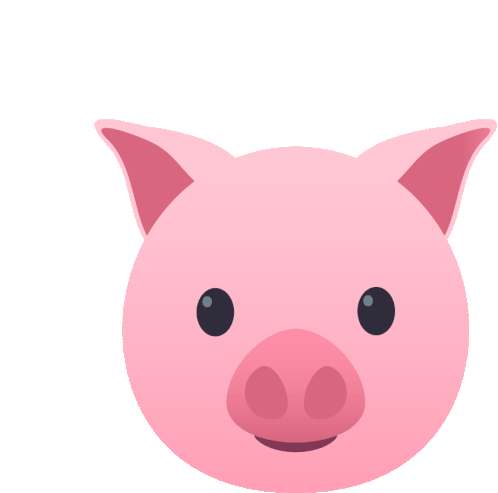

 The Three Little Pigs
The Three Little Pigs
Once upon a time there was a happy family of little pigs that had three children. The little pigs grew, and the parents noticed that they were very dependent. They didn't help with homework or struggle at all. So, one day, they got together and decided that the piggies, which were already quite grown up, would go live alone. The parents gave each one a little money, some good advice. The three little pigs left for the woods in search of a good place to build their own houses.
The first little pig, which was the laziest of all, was soon choosing to build a quick house that didn't require much effort. And he built a house of straw, though his brothers told him it was not safe.
The second little pig, who was less lazy than the first but who didn't like to work either, built a wooden house because he thought it was more practical and resistant.
The third little pig, the most sensible of all and the hardest working, preferred to build a brick house. It took longer to build it but after three days of intense work the house was ready.
The three little pigs heard that a dangerous wolf was walking through the woods. And it didn't take long for him to show up around their houses, looking for a good pork to eat.
The wolf then went to knock on the door of the first pig's house. The little pig, trying to intimidate him, said:
– Go away Mr. Wolf. Here you will not enter!
The wolf insisted and said:
- Open this door soon or then I'll huff and I'll puff and I'll blow your house down.
Seeing that the little pig wouldn't open the door, the wolf began to blow and blow so hard that the straw house flew through the air. The pig, desperate, ended up running towards his brother's wooden house. The wolf ran after him but couldn't catch him.
The wolf then went to knock on the door of the second pig's house. The little pig, trying to intimidate him, said:
– Go away Mr. Wolf. In my wooden house you will not enter!
The wolf insisted and said:
- Open this door soon or then I'll huff and I'll puff and I'll blow your house down.
Seeing that the little pigs would not open the door of the house, the wolf began to blow and blow so hard that the wooden house fell and was in pieces. The desperate, the piggies ended up running towards the other brother's brick and mortar house. The wolf ran after them but couldn't reach them.
The wolf then went to knock on the door of the third pig's house. The wolf got more and more furious and yelled:
– Open the door now!!!
And the little pigs replied:
– Go away Mr. Wolf. You won't be able to tear this house down because it's made of brick and cement.
The wolf insisted and said:
- Open this door soon or then I'll huff and I'll puff and I'll blow your house down.
Seeing that the little pigs didn't open the door of the house, the wolf began to blow, to blow, to blow, and the house continued in its place. The wolf was so tired that he ended up sitting by the door to rest. Meanwhile, he thought and thought about how to get into the house and had an idea. He went to get a ladder to go up to the roof of the house and enter the house through the chimney. The piggies, seeing what the wolf was up to, reacted quickly. They put a huge bucket of water on to boil, and he placed it at the end of the chimney and waited.
When the wolf entered the chimney, it fell right into the bucket filled with boiling water.
–OUCH, OUCH!!!!!!!! Screamed the wolf, running to the lake to relieve his burns and scared, he never again molested the piggies.
And as for the little pigs, they learned the lesson that anything that is done with effort has a better result. The three little pigs decided to live together and they all lived happily ever after.
The End.
-By The Brothers Grimm